Series
Ninjago: Maestros del Spinjitzu
-
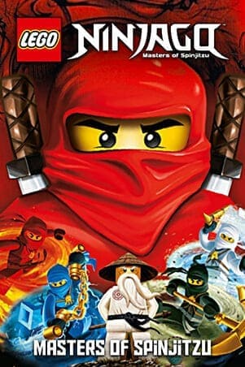
Piloto
2011
Los hermanos herreros Kai y Nya conocen a un anciano misterioso, el Maestro Wu, que busca su ayuda contra la amenaza de su hermano Garmadon y su nuevo ejército de Skulkin que dominan el Inframundo. Después de que Nya es secuestrada por los Skulkin y su líder, Samukai, Kai se une a los otros tres estudiantes de Wu, Jay, Zane y Cole, con la esperanza de rescatarla.
-
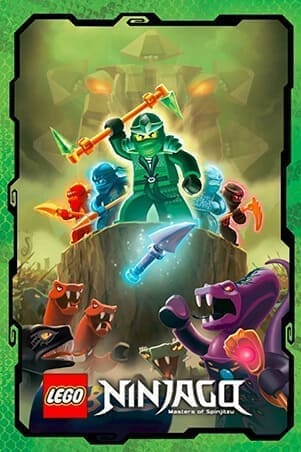
El Ascenso de las Serpientes
2011
Desde que Lord Garmadon desapareció del Inframundo, Ninjago ha estado en paz, pero los jóvenes Ninja se han vuelto perezosos. Mientras Garmadon acecha en las sombras, esperando el momento adecuado para atacar, los Ninja conocen a su joven hijo, Lloyd, quien desata sin cuidado un nuevo enemigo temible sobre Ninjago: las antiguas tribus de los Serpentine. El líder de los Serpentine, Pythor, trama un malvado plan para traer de vuelta a la legendaria serpiente devoradora, el Gran Devorador.
-
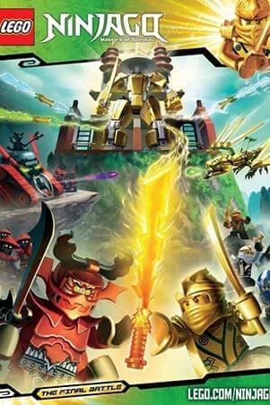
El Legado del Ninja Verde
2012
La segunda temporada comienza con las consecuencias de la batalla de los Ninja contra los Serpentine. Después de derrotar al Gran Devorador, Lord Garmadon huyó traicioneramente y abandonó a Wu y a los Ninja con las Armas Doradas, ahora conspirando contra ellos y poniendo en marcha sus malvados planes de conquistar la ciudad, habiendo tomado el mando de los Serpentines. Reuniendo a los Serpentines restantes bajo su mando, Lord Garmadon viaja a los Picos Dorados. En los Picos Dorados, lugar de nacimiento de las armas, une las cuatro armas y las forja en una Mega Arma aún más poderosa.
-
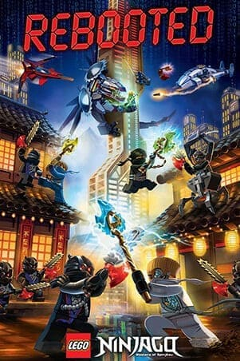
Reiniciado
2014
La victoria en la batalla final entre el Ninja Dorado y el Gran Tirano ha inaugurado una nueva era de paz y ha dado comienzo a un renacimiento tecnológico. La ciudad Ninjago ha sido reconstruida como una maravilla futurista, rebautizada como Nueva Ciudad Ninjago (organizada por Cyrus Borg) y ahora está completamente interconectada. Los Ninja han descubierto que ya no es necesario realizar actos heroicos y se han convertido en profesores en la Academia de Wu. Pero la paz es solo una ilusión...
-
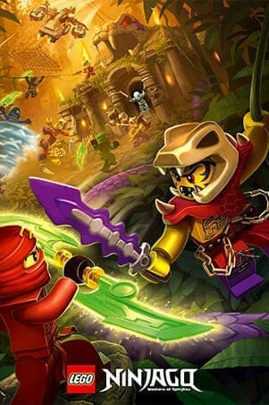
El Torneo de los Elementos
2015
Después de la pérdida de Zane, el equipo se divide y Lloyd busca reconstruirlo. Cuando Zane se sacrificó para detener al Maestro Dorado, el poder de las Armas Doradas desbloqueó nuevas habilidades dentro de él, revelando una nueva capa de titanio. El inmenso envío de energía destruyó partes de él y provocó que Zane desapareciera en el Digiverso. Solo P.I.X.A.L. estaba al tanto de la presencia digital de Zane, o eso creía... Pero todo cambia cuando los Ninja descubren que Zane está vivo y que el Maestro Chen los invita al Torneo de los Elementos.
-
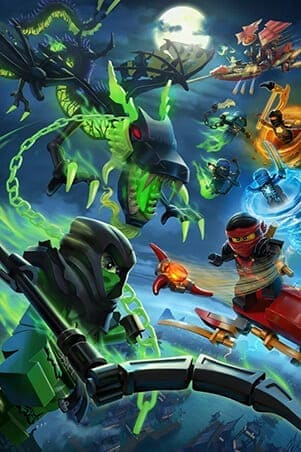
Possession
2015
Un Lloyd afligido es poseído por el fantasma de Morro, el Maestro del Viento y primer alumno de Wu. En el cuerpo de Lloyd, Morro deja sin poderes al otro ninja antes de robar el bastón de Wu. Contiene tres símbolos ocultos que son las claves para encontrar la Tumba del Primer Maestro del Spinjitzu. Wu sabe que si Morro encuentra la tumba, reclamará el Cristal del Reino. Esta reliquia tiene el poder de abrir el tejido entre los reinos, lo que permite al poderoso Preeminente entrar en Ninjago.
-
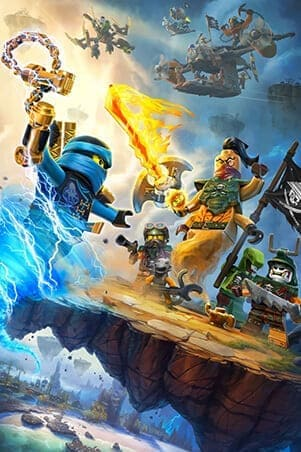
Skybound
2016
Con la derrota de la invasión fantasma de Morro, los Ninja se han convertido en grandes celebridades mediáticas. Pero fuerzas oscuras amenazan una vez más la isla Ninjago cuando la Tetera de Tyrahn es redescubierta por el fantasma de Clouse, la antigua mano derecha del Maestro Chen. Él permite que Nadakhan, un Djinn malvado (Genio), y capitán del infame Misfortune's Keep, escape de la tetera. Después de reunir a su tripulación pirata, Nadakhan regSPANresa a su reino natal y reino de Djinjago, para encontrarlo derrumbándose. Esta destrucción, causada por los Ninja que derrotaron al Preeminente, lleva a Nadakhan a jurar venganza. Reacondiciona su barco para que pueda volar y se prepara para atacar. Ahora son Piratas del Cielo.
-
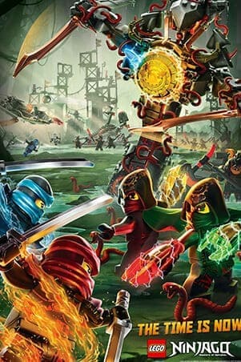
La Manecillas del Tiempo
2017
Poco después del Día de los Difuntos, el Maestro Wu espera a su viejo enemigo Acronix para completar una batalla que comenzaron hace 40 años. Pero Wu nunca debería haberse enfrentado solo a un enemigo tan poderoso. Acronix golpea a Wu con el Puñetazo del Tiempo, lo que hace que comience a envejecer rápidamente. Acronix escapa y se reúne con su hermano gemelo Krux, que ha vivido los últimos 40 años disfrazado del adorable Dr. Sander Saunders. Durante este tiempo, Krux ha estado criando un nuevo enemigo escurridizo: los Guerreros Bermellón.
-
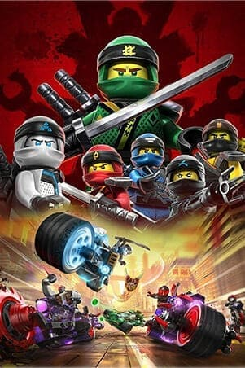
Los Hijos de Garmadon
2018
Después de la pérdida del Maestro Wu, los Ninja, liderados por el Maestro Lloyd, deben proteger a la Familia Real y evitar que un grupo conocido como los Hijos de Garmadon reviva con éxito a Lord Garmadon usando las tres Máscaras Oni con poderes peligrosos.
-
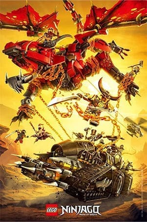
Hunted
2018
Mientras Lloyd y Nya resisten el control opresivo del Emperador Garmadon en la ciudad de Ninjago, el joven Wu y el resto de los Ninja están varados en un reino bárbaro donde feroces dragones están siendo perseguidos por el Barón de Hierro y su pandilla de cazadores de dragones. Lloyd debe resistir en Ninjago City, los demás necesitan encontrar la legendaria Armadura de Dragón si alguna vez esperan volver a casa para detener al Emperador Garmadon de una vez por todas.
-
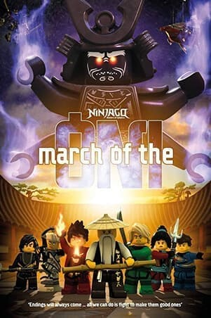
La Marcha de los Oni
2019
Los Oni están llegando... A medida que la oscuridad demoníaca desciende sobre el reino de Ninjago, ha llegado el momento de que nuestros héroes se levanten de nuevo y protejan la tierra que todos los Maestros de Spinjitzu llaman hogar. Es un mundo lleno de una rica historia y legado, y es desde aquí donde nuestros héroes Ninja deben desbloquear un poder aún mayor para derrotar a la oscuridad que marcha hacia ellos. ¿Qué podrían ser estas fuerzas oscuras que cambian de forma, por qué quieren destruir Ninjago y cómo pueden ser derrotadas?
Ninjago (2019)
-
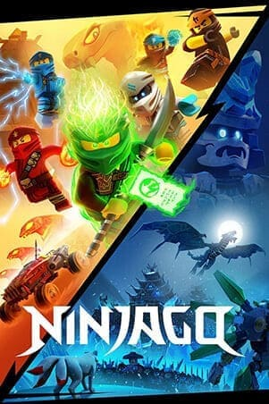
Secretos del Spinjitzu Prohibido
2019
Disfrutando de la gloria de su victoria de hace 6 meses, los Ninja se embarcan en una nueva aventura para explorar una misteriosa pirámide, solo para descansar un poco y recuperarse, por supuesto. Pero, ¿el éxito ha adormecido a nuestros héroes con una falsa sensación de seguridad? Cuando los Ninja liberaron accidentalmente a una antigua amenaza llamada Pyro Vipers, nada podría haberlos preparado para el caos que sigue.
-
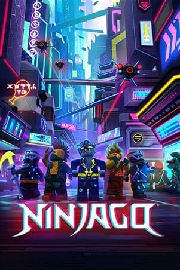
Primer Imperio
2020
En el videojuego Prime Empire, puedes ser quien quieras ser. Jay, siempre ávido jugador, no puede esperar para comenzar a jugar. Pero cuando cientos de jugadores, y Jay, de repente comienzan a desaparecer sin dejar rastro, los Ninja deben entrar en el juego y descubrir quién está jugando a Unagami. Ahora deben competir en aventuras y mundos de juego difíciles, ganar los tres Key-tanas, y solo entonces podrán enfrentarse al malvado Unagami. ¿Podrán llegar al nivel final y ganar el juego?
-
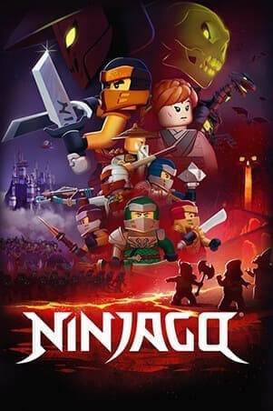
Master of the Mountain
2020
Los Ninja están invitados al hermoso Reino Shintaro para celebrar el cumpleaños de la joven princesa Vania. A primera vista, la Ciudad de Marfil parece un lugar prístino, pero los Ninja pronto descubren un inframundo oscuro, oscuro y olvidado hace mucho tiempo: las Mazmorras de Shintaro. Una vez dentro, deben luchar para abrirse camino hacia la libertad a través de un laberinto de túneles pavimentados con peligros y extrañas criaturas gobernadas por el despiadado Hechicero Calavera. El ninja debe elegir sus caminos sabiamente...
-
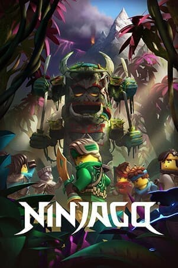
La Isla
2021
¡Una expedición liderada por Misako, el Maestro Wu y Clutch Powers ha desaparecido! Con tanto en juego, los ninjas se embarcan en una misión de rescate a una isla misteriosa e inexplorada.
-
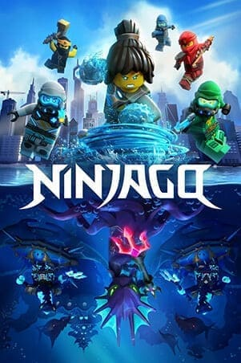
Seabound
2021
Cuando los poderes de Nya se ven interrumpidos repentinamente, los ninjas viajan al fondo del Mar Infinito en busca de respuestas. Encuentran un peligroso mundo submarino gobernado por el Príncipe Kalmaar, que quiere destruir la ciudad de Ninjago despertando a la todopoderosa serpiente marina, Wojira. Los ninjas deben encontrar los preciados amuletos para detenerlo y mantener su hogar a salvo. ¿Triunfarán sobre el mal al que se enfrentan en las profundidades del océano?
-
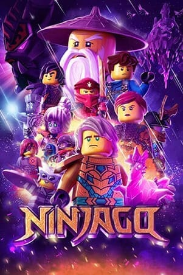
Cristalizado
2022
Un grupo llamado Los Nuevos Ninja aparece en la ciudad de Ninjago, luchando contra los contrabandistas de Vengestone. El equipo ninja ha perdido la fe y se ha separado. Nya vaga por el Mar Infinito como un dragón de agua, pero comienza a recuperar sus recuerdos. Se encuentra con un elemental de agua llamado Nyad, que la ayuda a encontrar el camino de regreso a casa. Los ninjas se reúnen y descubren un cargamento secreto de Vengestone en un túnel del metro. Se ven obligados a luchar contra Miss Demeanor y sus matones, pero son humillados cuando los New Ninja derrotan a los villanos.
Ninjago: El Ascenso de los Dragones
-
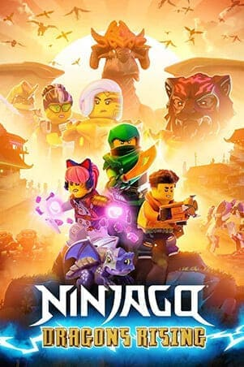
Dragons Rising: Temporada 1
2023
Algún tiempo después de Cristalizado, un fenómeno conocido como "La fusión" combina Ninjago con el resto de los Dieciséis Reinos de la Creación. Años más tarde, Lloyd se hace amigo de dos civiles: Arin y Sora, el primero, un fanático de los Ninja, y el segundo, un tecnópata del Reino totalitario del Imperio. Los tres tienen la tarea de encontrar al resto de los ninjas dispersos y luchar contra las Garras del Imperio, que codician a los Dragones de la Fuente para drenar su energía elemental como recurso.
-
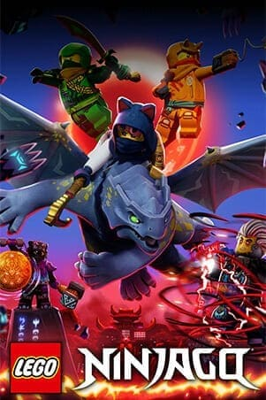
Dragons Rising: Temporada 2
2024
CUIDADO: Una nueva amenaza escalofriante está en el horizonte, y de una cara que parece demasiado familiar. ¿Un ejército de máscaras de lobo brillantes? ¿Un gong ominoso? ¿Podría todo estar conectado con las visiones de la Luna de Sangre que persiguen al Maestro Lloyd? ¡Prepárate para más acción ninja épica porque los ninjas NUNCA se rinden!
-
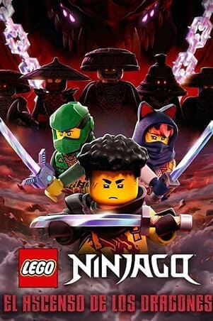
Dragons Rising: Temporada 3
2025
En esta temporada, los Forbidden Five regresan y están más peligrosos que nunca, buscando armas especiales para desbloquear el poder del Dragón del Caos, Thunderfang. Mientras tanto, los Ninja deben encontrar a sus compañeros desaparecidos y detener a los villanos antes de que sea demasiado tarde.
-
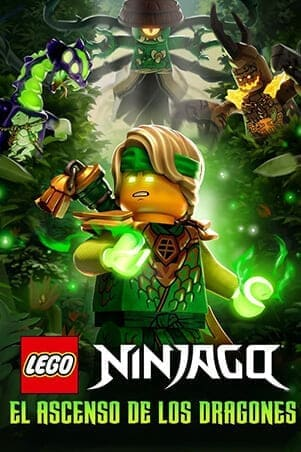
Dragons Rising: Temporada 4
2026
En el camino le esperan nuevos personajes, viajes épicos, monstruos elementales y otros temibles enemigos. ¡Nunca ha habido tanto en juego! Después de encontrarse con el Dragón Arca de la Vida, Lloyd está a punto de embarcarse en un arriesgado viaje…
Cortos
-
Piloto
(Temporada 0)
-
La Silla de Chen
(Temporada 3)
-
Cuentos Fantásticos
(Temporada 6)
-
El Regreso de los Villanos
(Especial Día de los Difuntos)
-
Los Tés de Wu
(Antes de la Temporada 7)
-
Operación Heavy Metal
(Temporada 7)
-
El ascenso del Samurai X
(Temporada 7)
-
Decoded
(Temporada 7)
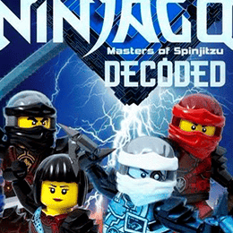
-
Legacy
(Antes de la Temporada 10)
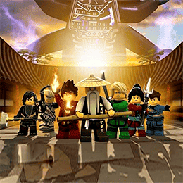
-
Prime Empire
(Temporada 12)
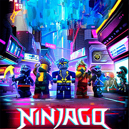
-
Las 6 virtudes
(Antes de la Temporada 15)
-
Monstrosity
(Temporada 17)
-
El Monstruoso Viaje de Kai
(Temporada 17)
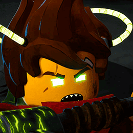
-
Mechs Elementales
(Temporada 18)
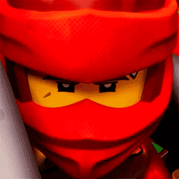
-
El regreso a Wyldness
(Temporada 18)
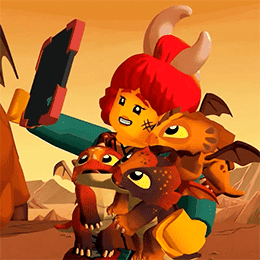
-
10 Años de Ninjago
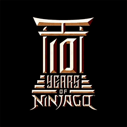
-
15 Años de Ninjago
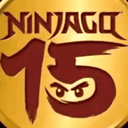
-
Duskfall